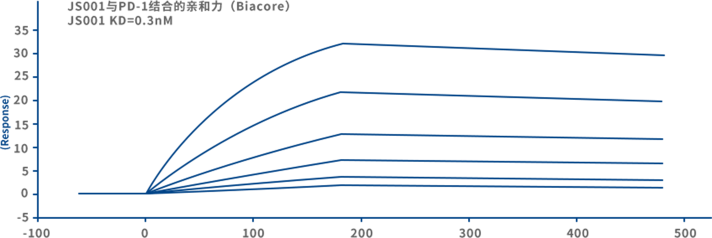
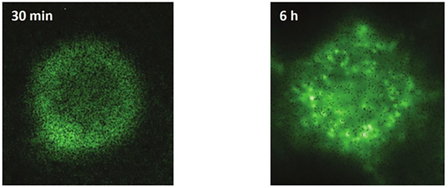
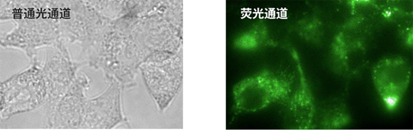

- 研发平台
- 生产基地
-
产品管线
产品管线
-
Cancer
-
Autoimmune Diseases
-
Metabolic Diseases
-
Neurologic Diseases
-
Infectious Diseases
JS001
特瑞普利单抗，商品名：拓益
君实生物自主研发、具备完全自主知识产权的重组人源化抗PD-1注射用单克隆抗体，针对各种恶性肿瘤治疗，为生物制品1类新药，获得“十二五”、“十三五”2项国家“重大新药创制”科技重大专项支持。
2018年12月17日，特瑞普利单抗作为我国首个自主研发抗PD-1单抗获批上市，用于治疗既往标准治疗失败后的局部进展或转移性黑色素瘤，并获得2019年版《中国临床肿瘤学会（CSCO）黑色素瘤诊疗指南》推荐。
除已获批的首个适应症外，君实生物也正在就特瑞普利单抗进行多项拓展适应症的临床试验。截至目前，公司正在就特瑞普利单抗开展超过30项临床试验，包括14项关键注册临床，与国内众多临床试验中心进行包括肺癌、肝癌、尿路上皮癌、食管癌及鼻咽癌等多个适应症在内的Ⅰ期、Ⅱ期和Ⅲ期临床试验，并在美国同步进行Ⅰ期临床试验。
药品代号：JS001 靶点：PD-1
- 适应症
- 临床前
- 临床
一期 - 临床
二期 - 临床
三期 - 临床试
验地区
- 黑色色素（一线治疗，单药）
- 中国
- 黑色色素（一线治疗，单药）
- 亚太多中心
- 黑色色素（一线治疗，单药）
- 亚太多中心
- 黑色色素（一线治疗，单药）
- 亚太多中心
- 黑色色素（一线治疗，单药）
- 亚太多中心
- 黑色色素（一线治疗，单药）
- 亚太多中心
我们通过多个研发步骤自主研发并优化特瑞普利单抗，特别是在发现并高效鉴定新的分子实体、小鼠抗体的人源化、体内抗体产生的功能性评估及稳定细胞株的构建等方面，使得
特瑞普利成为具有独特治疗优势的创新药物——具有亲和力高、内吞效果佳、稳定性好的优势，在众多的临床应用中显示出良好的安全性和有效性。
围绕特瑞普利单抗项目，我们已在中国、美国、印度尼西亚、俄罗斯取得了4项发明专利授权。
作用机理
PD-1为T细胞表面免疫检查点受体。如图下部分所示，当PD-1在肿瘤细胞表面结合PD-L1/PD-L2，T细胞便接收抑制剂信号。透过PD-1及其配体抑制致使T细胞免疫失能并因此阻断抗肿瘤反应。抗PD-1单克隆抗体之设计乃为阻止PD-1与PD-L1/PD-L2结合，从而使T细胞的功能恢复。
抗原（Ag）能够刺激免疫反应。抗原呈递细胞（APC）可与Ag结合以激活T细胞受体（TCR）和主要组织相容性复合物（MHC）结合。 调节性T细胞通过维持PD-1在其表面上的表达而产生高度免疫抑制性肿瘤环境。
特瑞普利单抗的特点
-
1高亲和力
相关实验结果显示特瑞普利具有与PD-1结合的高亲和力，这使特瑞普利能够更牢固地结合PD-1受体，从而更有效地阻止PD-1受体与其配体PD-L1/PD-L2的结合，达到 恢复T细胞的免疫功能、激活抗肿瘤免疫应答、阻止肿瘤逃逸 的目的。
(注：上图为以Biacore T200测定的JS001对PD-1的结合亲和力。以平衡解离常数（KD）测定的JS001亲和力约为0.3nM，表示JS001与PD-1的亲和力高。平衡解离常数（KD）表示平衡状态时两种PD-1和其JS001的解离程度，KD值越大说明解离越多，亲和力越小；反之则亲和力越大。RU=共振单位。S=秒。) 年资料来源：CSCO，2017年。
-
2强劲诱导PD-1内吞
特瑞普利单抗结合其特异抗原PD-1受体后，在阻断PD-1和其配体PD-L1/PD-L2结合的同时，能够诱导PD-1受体的内吞并降低PD-1在细胞膜表面的表达。
以下的免疫荧光试验结果显示特瑞普利单抗可诱导强劲的PD-1内吞作用，降低PD-1在细胞膜表面的表达，从而降低PD-1受体与其配体PD-L1/PD-L2的结合带来的免疫抑制作用，进而激活T细胞的抗肿瘤免疫应答、阻止肿瘤细胞免疫逃逸。
免疫荧光实验结果显示JS001诱导强劲的PD-1内吞作用
注：研究中，使用293T.hPD1细胞直接观察JS001诱导的PD-1内吞。293T.hPD1细胞在37℃下与CypHer5E标记的JS001一起温育，使用Operetta高通量荧光成像系统（PerkinElmer）在不同的时间点观察细胞。CypHer5E只有被内吞后在细胞内体酸性环境中才发出荧光。上图所显示为在30分钟和6小时时拍摄的单个细胞的照片。温育30分钟已见明显内吞现象，6小时后可以在293T.hPD1细胞的细胞质区域中清楚地看到点状荧光和荧光囊泡（点或小荧光圈）积聚。
注：上图是在24小时时拍摄的多个细胞的照片。在上述实验中，以CypHer5E标记的JS001诱导PD-1内吞，并用PE标记的与特瑞普利单抗非竞争性的抗PD-1单克隆抗体（克隆MIH4）进行复染，显示细胞表面PD-1水平。在左图中，CypHer5E荧光强度（蓝线）随JS001浓度增高而增强，并且和细胞表面PD-1水平（红线）之间成负相关。在右图中，JS001诱导的PD-1内吞（蓝线）随时间变化稳定增加，而细胞表面PD-1水平（红线）则相反，随时间变化下降。细胞表面PD-1的降低可以改善T细胞对抗原的反应活性，减少免疫抑制作用。
流式细胞仪结果显示特瑞普利诱导的内吞同时降低膜表面PD-1的表达
注：以CypHer5E标记的JS001诱导人T细胞PD-1内吞，并用PE－缀合的非竞争性PD-1单抗克隆MIH4复染，显示细胞表面PD-1水平。在左图中，在CypHer5E荧光强度（蓝线）和表面PD-1水平之间观察到负相关。在右图中，JS001诱导的PD-1内吞（蓝线）随时间变化稳定增加，而细胞表面PD-1水平（红线）则相反，随时间变化下降。 MFI=平均荧光强度。
-
3不依赖于糖基化修饰与PD-1的FG环结合
特瑞普利单抗具有一个较长的含有18个氨基酸的HCDR3环，与PD-1的FG环形成多重结合。
对PD-1的结构分析表明，在N-糖基化位点中，N49、N58、N116三个位点均可观察到糖基化修饰。采用芯片上固定有特瑞普利的表面等离子体共振（SPR）分析293T或大肠杆菌表达系统中特瑞普利单抗与PD-1蛋白的结合情况，结果表明，特瑞普利单抗与大肠杆菌PD-1蛋白的结合亲和力（KD）（KD=0.324nm）与293T细胞（KD=0.238nm）无明显差异。该结果表明，特瑞普利单抗与PD-1的结合不依赖于任何糖基化修饰。
肿瘤细胞中蛋白糖基化修饰紊乱在多种肿瘤的发生和进展中发挥着关键作用。使用SPR分析评估特瑞普利单抗与完全糖基化或非糖基化的PD-1蛋白的结合亲和力，未观察到明显差异，表明特瑞普利单抗与PD-1结合独立于糖基化修饰。因此， 特瑞普利单抗的临床应用不太可能受到PD-1糖基化修饰失调的影响，与PD-1的结合较为稳定。 -
4特瑞普利单抗联合疗法
除单药治疗外，PD-1/L1抑制剂亦于联合治疗方面显示出巨大潜力。
我们已就特瑞普利单抗与多家国内外知名企业进行多种联合治疗方案的合作开发， 探索在单药治疗效果不显著的适应症中的应用，以期找到合适的联用方案，提升肿瘤治疗的有效率。 -
5相关文献
- 期刊名称
- 文献标题
- 发表时间
全部
- 2019年
- 2020年
-
Annals of Oncology
Safety and clinical activity with an anti-PD-1antibody JS001 in advancedmelanoma orurologic cancer patients -
Annals of Oncology
Safety, efficacy and tumor mutational burden as a biomarker of overallsurvival benefit in chemorefractory gastric cancer treated with toripalimab,a PD1 antibody in phase Ib/IIclinical trial NCT02915432 -
Annals of Translational Medicine
JS001, an anti-PD-1 mAb for advanced triplenegative breast cancer patients after multi-line systemic therapy in a phase I trial -
Annals of Oncology
Safety and clinical activity with an anti-PD-1antibody JS001 in advancedmelanoma orurologic cancer patients
-
Annals of Oncology
Safety and clinical activity with an anti-PD-1antibody JS001 in advancedmelanoma orurologic cancer patients -
Annals of Oncology
Safety, efficacy and tumor mutational burden as a biomarker of overallsurvival benefit in chemorefractory gastric cancer treated with toripalimab,a PD1 antibody in phase Ib/IIclinical trial NCT02915432 -
Annals of Translational Medicine
JS001, an anti-PD-1 mAb for advanced triplenegative breast cancer patients after multi-line systemic therapy in a phase I trial -
Annals of Oncology
Safety and clinical activity with an anti-PD-1antibody JS001 in advancedmelanoma orurologic cancer patients